import numpy as np
import pandas as pd
import matplotlib.pyplot as plt
import seaborn as sns
import sklearn.preprocessing
#---#}
from autogluon.tabular import TabularPredictor
from autogluon.timeseries import TimeSeriesDataFrame, TimeSeriesPredictor
from autogluon.common import space
#---#
import warnings
warnings.filterwarnings('ignore')14wk-59: 자전거대여 / 자료분석(Autogluon)
1. 강의영상
2. Imports
3. Data
ref: https://www.kaggle.com/competitions/bike-sharing-demand
- 자료 다운로드
!kaggle competitions download -c bike-sharing-demandDownloading bike-sharing-demand.zip to /home/cgb2/Dropbox/07_lectures/2023-09-MP2023/posts
100%|█████████████████████████████████████████| 189k/189k [00:00<00:00, 841kB/s]
100%|█████████████████████████████████████████| 189k/189k [00:00<00:00, 837kB/s]!unzip bike-sharing-demand.zip -d dataArchive: bike-sharing-demand.zip
inflating: data/sampleSubmission.csv
inflating: data/test.csv
inflating: data/train.csv sampleSubmission = pd.read_csv('data/sampleSubmission.csv')
df_train = pd.read_csv('data/train.csv')
df_test = pd.read_csv('data/test.csv') !rm -rf data
!rm bike-sharing-demand.zip- 자료관찰
display("train",df_train,"test",df_test)'train'| datetime | season | holiday | workingday | weather | temp | atemp | humidity | windspeed | casual | registered | count | |
|---|---|---|---|---|---|---|---|---|---|---|---|---|
| 0 | 2011-01-01 00:00:00 | 1 | 0 | 0 | 1 | 9.84 | 14.395 | 81 | 0.0000 | 3 | 13 | 16 |
| 1 | 2011-01-01 01:00:00 | 1 | 0 | 0 | 1 | 9.02 | 13.635 | 80 | 0.0000 | 8 | 32 | 40 |
| 2 | 2011-01-01 02:00:00 | 1 | 0 | 0 | 1 | 9.02 | 13.635 | 80 | 0.0000 | 5 | 27 | 32 |
| 3 | 2011-01-01 03:00:00 | 1 | 0 | 0 | 1 | 9.84 | 14.395 | 75 | 0.0000 | 3 | 10 | 13 |
| 4 | 2011-01-01 04:00:00 | 1 | 0 | 0 | 1 | 9.84 | 14.395 | 75 | 0.0000 | 0 | 1 | 1 |
| ... | ... | ... | ... | ... | ... | ... | ... | ... | ... | ... | ... | ... |
| 10881 | 2012-12-19 19:00:00 | 4 | 0 | 1 | 1 | 15.58 | 19.695 | 50 | 26.0027 | 7 | 329 | 336 |
| 10882 | 2012-12-19 20:00:00 | 4 | 0 | 1 | 1 | 14.76 | 17.425 | 57 | 15.0013 | 10 | 231 | 241 |
| 10883 | 2012-12-19 21:00:00 | 4 | 0 | 1 | 1 | 13.94 | 15.910 | 61 | 15.0013 | 4 | 164 | 168 |
| 10884 | 2012-12-19 22:00:00 | 4 | 0 | 1 | 1 | 13.94 | 17.425 | 61 | 6.0032 | 12 | 117 | 129 |
| 10885 | 2012-12-19 23:00:00 | 4 | 0 | 1 | 1 | 13.12 | 16.665 | 66 | 8.9981 | 4 | 84 | 88 |
10886 rows × 12 columns
'test'| datetime | season | holiday | workingday | weather | temp | atemp | humidity | windspeed | |
|---|---|---|---|---|---|---|---|---|---|
| 0 | 2011-01-20 00:00:00 | 1 | 0 | 1 | 1 | 10.66 | 11.365 | 56 | 26.0027 |
| 1 | 2011-01-20 01:00:00 | 1 | 0 | 1 | 1 | 10.66 | 13.635 | 56 | 0.0000 |
| 2 | 2011-01-20 02:00:00 | 1 | 0 | 1 | 1 | 10.66 | 13.635 | 56 | 0.0000 |
| 3 | 2011-01-20 03:00:00 | 1 | 0 | 1 | 1 | 10.66 | 12.880 | 56 | 11.0014 |
| 4 | 2011-01-20 04:00:00 | 1 | 0 | 1 | 1 | 10.66 | 12.880 | 56 | 11.0014 |
| ... | ... | ... | ... | ... | ... | ... | ... | ... | ... |
| 6488 | 2012-12-31 19:00:00 | 1 | 0 | 1 | 2 | 10.66 | 12.880 | 60 | 11.0014 |
| 6489 | 2012-12-31 20:00:00 | 1 | 0 | 1 | 2 | 10.66 | 12.880 | 60 | 11.0014 |
| 6490 | 2012-12-31 21:00:00 | 1 | 0 | 1 | 1 | 10.66 | 12.880 | 60 | 11.0014 |
| 6491 | 2012-12-31 22:00:00 | 1 | 0 | 1 | 1 | 10.66 | 13.635 | 56 | 8.9981 |
| 6492 | 2012-12-31 23:00:00 | 1 | 0 | 1 | 1 | 10.66 | 13.635 | 65 | 8.9981 |
6493 rows × 9 columns
- train/test가 나누어진 시점 해석
display("train",df_train[::24][:20], "test",df_test[::24][:10])'train'| datetime | season | holiday | workingday | weather | temp | atemp | humidity | windspeed | casual | registered | count | |
|---|---|---|---|---|---|---|---|---|---|---|---|---|
| 0 | 2011-01-01 00:00:00 | 1 | 0 | 0 | 1 | 9.84 | 14.395 | 81 | 0.0000 | 3 | 13 | 16 |
| 24 | 2011-01-02 00:00:00 | 1 | 0 | 0 | 2 | 18.86 | 22.725 | 88 | 19.9995 | 4 | 13 | 17 |
| 48 | 2011-01-03 01:00:00 | 1 | 0 | 1 | 1 | 8.20 | 8.335 | 44 | 27.9993 | 0 | 2 | 2 |
| 72 | 2011-01-04 04:00:00 | 1 | 0 | 1 | 1 | 5.74 | 9.090 | 63 | 6.0032 | 0 | 2 | 2 |
| 96 | 2011-01-05 05:00:00 | 1 | 0 | 1 | 1 | 9.02 | 11.365 | 47 | 11.0014 | 0 | 3 | 3 |
| 120 | 2011-01-06 06:00:00 | 1 | 0 | 1 | 2 | 5.74 | 8.335 | 63 | 7.0015 | 0 | 36 | 36 |
| 144 | 2011-01-07 07:00:00 | 1 | 0 | 1 | 1 | 8.20 | 10.605 | 69 | 8.9981 | 8 | 76 | 84 |
| 168 | 2011-01-08 07:00:00 | 1 | 0 | 0 | 2 | 6.56 | 9.090 | 74 | 7.0015 | 1 | 8 | 9 |
| 192 | 2011-01-09 07:00:00 | 1 | 0 | 0 | 1 | 3.28 | 4.545 | 53 | 12.9980 | 1 | 5 | 6 |
| 216 | 2011-01-10 07:00:00 | 1 | 0 | 1 | 1 | 4.92 | 6.060 | 50 | 15.0013 | 2 | 75 | 77 |
| 240 | 2011-01-11 09:00:00 | 1 | 0 | 1 | 2 | 7.38 | 9.850 | 51 | 11.0014 | 3 | 127 | 130 |
| 264 | 2011-01-12 11:00:00 | 1 | 0 | 1 | 1 | 8.20 | 9.090 | 51 | 26.0027 | 3 | 32 | 35 |
| 288 | 2011-01-13 11:00:00 | 1 | 0 | 1 | 2 | 8.20 | 8.335 | 44 | 30.0026 | 4 | 33 | 37 |
| 312 | 2011-01-14 12:00:00 | 1 | 0 | 1 | 1 | 8.20 | 9.850 | 44 | 16.9979 | 2 | 59 | 61 |
| 336 | 2011-01-15 12:00:00 | 1 | 0 | 0 | 1 | 9.84 | 11.365 | 48 | 15.0013 | 15 | 74 | 89 |
| 360 | 2011-01-16 12:00:00 | 1 | 0 | 0 | 1 | 9.84 | 10.605 | 41 | 19.0012 | 29 | 75 | 104 |
| 384 | 2011-01-17 12:00:00 | 1 | 1 | 0 | 2 | 7.38 | 9.850 | 47 | 8.9981 | 10 | 70 | 80 |
| 408 | 2011-01-19 00:00:00 | 1 | 0 | 1 | 2 | 9.02 | 13.635 | 93 | 0.0000 | 0 | 3 | 3 |
| 432 | 2011-02-01 01:00:00 | 1 | 0 | 1 | 2 | 6.56 | 9.090 | 69 | 7.0015 | 0 | 3 | 3 |
| 456 | 2011-02-02 02:00:00 | 1 | 0 | 1 | 3 | 9.02 | 11.365 | 93 | 8.9981 | 4 | 0 | 4 |
'test'| datetime | season | holiday | workingday | weather | temp | atemp | humidity | windspeed | |
|---|---|---|---|---|---|---|---|---|---|
| 0 | 2011-01-20 00:00:00 | 1 | 0 | 1 | 1 | 10.66 | 11.365 | 56 | 26.0027 |
| 24 | 2011-01-21 00:00:00 | 1 | 0 | 1 | 2 | 9.84 | 11.365 | 70 | 16.9979 |
| 48 | 2011-01-22 00:00:00 | 1 | 0 | 0 | 1 | 1.64 | 1.515 | 45 | 16.9979 |
| 72 | 2011-01-23 01:00:00 | 1 | 0 | 0 | 1 | 1.64 | 3.790 | 57 | 7.0015 |
| 96 | 2011-01-24 03:00:00 | 1 | 0 | 1 | 1 | 1.64 | 1.515 | 45 | 16.9979 |
| 120 | 2011-01-25 04:00:00 | 1 | 0 | 1 | 1 | 5.74 | 8.335 | 74 | 7.0015 |
| 144 | 2011-01-26 06:00:00 | 1 | 0 | 1 | 3 | 8.20 | 9.090 | 86 | 19.0012 |
| 168 | 2011-01-28 05:00:00 | 1 | 0 | 1 | 2 | 7.38 | 10.605 | 80 | 7.0015 |
| 192 | 2011-01-29 06:00:00 | 1 | 0 | 0 | 1 | 6.56 | 9.090 | 64 | 8.9981 |
| 216 | 2011-01-30 07:00:00 | 1 | 0 | 0 | 1 | 5.74 | 10.605 | 86 | 0.0000 |
- 시계열분석을 해야하나?
코드들을 확인 (https://www.kaggle.com/c/bike-sharing-demand/code?competitionId=3948&sortBy=voteCount) -> 시계열분석은 아닌것 같지않어?
- 데이터분석전략: 딱히 기세를 모델링할 필요를 못느끼겠음.
- 오히려 시계열을 피처엔지어링하여 회귀문제로 바꾸는게 적절하다.
- 시계열 -> 요일,시간의 피처추출 + 외부자료를 활용하여 휴일유무 체크 + 외부자료를 해당요일의 날씨체크 -> lm(y~X)의 회귀문제로 해석!
4. 적합1 -> 제출1
A. 적합
set(df_train.columns) - set(df_test.columns){'casual', 'count', 'registered'}- 데이터 전처리
df_train_featured = df_train.copy()
df_test_featured = df_test.copy()
#---#
df_train_featured = df_train_featured.drop(['casual','registered'],axis=1)- step2~4
# step1 -- pass
# step2
predictr = TabularPredictor(label='count')
# step3
predictr.fit(df_train_featured)
# step4
yhat = predictr.predict(df_train_featured)
yyhat = predictr.predict(df_test_featured)No path specified. Models will be saved in: "AutogluonModels/ag-20231211_023722"
No presets specified! To achieve strong results with AutoGluon, it is recommended to use the available presets.
Recommended Presets (For more details refer to https://auto.gluon.ai/stable/tutorials/tabular/tabular-essentials.html#presets):
presets='best_quality' : Maximize accuracy. Default time_limit=3600.
presets='high_quality' : Strong accuracy with fast inference speed. Default time_limit=3600.
presets='good_quality' : Good accuracy with very fast inference speed. Default time_limit=3600.
presets='medium_quality' : Fast training time, ideal for initial prototyping.
Beginning AutoGluon training ...
AutoGluon will save models to "AutogluonModels/ag-20231211_023722"
=================== System Info ===================
AutoGluon Version: 1.0.0
Python Version: 3.11.6
Operating System: Linux
Platform Machine: x86_64
Platform Version: #26~22.04.1-Ubuntu SMP PREEMPT_DYNAMIC Thu Jul 13 16:27:29 UTC 2
CPU Count: 16
Memory Avail: 116.34 GB / 125.71 GB (92.5%)
Disk Space Avail: 199.49 GB / 456.88 GB (43.7%)
===================================================
Train Data Rows: 10886
Train Data Columns: 9
Label Column: count
AutoGluon infers your prediction problem is: 'regression' (because dtype of label-column == int and many unique label-values observed).
Label info (max, min, mean, stddev): (977, 1, 191.57413, 181.14445)
If 'regression' is not the correct problem_type, please manually specify the problem_type parameter during predictor init (You may specify problem_type as one of: ['binary', 'multiclass', 'regression'])
Problem Type: regression
Preprocessing data ...
Using Feature Generators to preprocess the data ...
Fitting AutoMLPipelineFeatureGenerator...
Available Memory: 119131.28 MB
Train Data (Original) Memory Usage: 1.45 MB (0.0% of available memory)
Inferring data type of each feature based on column values. Set feature_metadata_in to manually specify special dtypes of the features.
Stage 1 Generators:
Fitting AsTypeFeatureGenerator...
Note: Converting 2 features to boolean dtype as they only contain 2 unique values.
Stage 2 Generators:
Fitting FillNaFeatureGenerator...
Stage 3 Generators:
Fitting IdentityFeatureGenerator...
Fitting DatetimeFeatureGenerator...
Stage 4 Generators:
Fitting DropUniqueFeatureGenerator...
Stage 5 Generators:
Fitting DropDuplicatesFeatureGenerator...
Types of features in original data (raw dtype, special dtypes):
('float', []) : 3 | ['temp', 'atemp', 'windspeed']
('int', []) : 5 | ['season', 'holiday', 'workingday', 'weather', 'humidity']
('object', ['datetime_as_object']) : 1 | ['datetime']
Types of features in processed data (raw dtype, special dtypes):
('float', []) : 3 | ['temp', 'atemp', 'windspeed']
('int', []) : 3 | ['season', 'weather', 'humidity']
('int', ['bool']) : 2 | ['holiday', 'workingday']
('int', ['datetime_as_int']) : 5 | ['datetime', 'datetime.year', 'datetime.month', 'datetime.day', 'datetime.dayofweek']
0.0s = Fit runtime
9 features in original data used to generate 13 features in processed data.
Train Data (Processed) Memory Usage: 0.93 MB (0.0% of available memory)
Data preprocessing and feature engineering runtime = 0.05s ...
AutoGluon will gauge predictive performance using evaluation metric: 'root_mean_squared_error'
This metric's sign has been flipped to adhere to being higher_is_better. The metric score can be multiplied by -1 to get the metric value.
To change this, specify the eval_metric parameter of Predictor()
Automatically generating train/validation split with holdout_frac=0.1, Train Rows: 9797, Val Rows: 1089
User-specified model hyperparameters to be fit:
{
'NN_TORCH': {},
'GBM': [{'extra_trees': True, 'ag_args': {'name_suffix': 'XT'}}, {}, 'GBMLarge'],
'CAT': {},
'XGB': {},
'FASTAI': {},
'RF': [{'criterion': 'gini', 'ag_args': {'name_suffix': 'Gini', 'problem_types': ['binary', 'multiclass']}}, {'criterion': 'entropy', 'ag_args': {'name_suffix': 'Entr', 'problem_types': ['binary', 'multiclass']}}, {'criterion': 'squared_error', 'ag_args': {'name_suffix': 'MSE', 'problem_types': ['regression', 'quantile']}}],
'XT': [{'criterion': 'gini', 'ag_args': {'name_suffix': 'Gini', 'problem_types': ['binary', 'multiclass']}}, {'criterion': 'entropy', 'ag_args': {'name_suffix': 'Entr', 'problem_types': ['binary', 'multiclass']}}, {'criterion': 'squared_error', 'ag_args': {'name_suffix': 'MSE', 'problem_types': ['regression', 'quantile']}}],
'KNN': [{'weights': 'uniform', 'ag_args': {'name_suffix': 'Unif'}}, {'weights': 'distance', 'ag_args': {'name_suffix': 'Dist'}}],
}
Fitting 11 L1 models ...
Fitting model: KNeighborsUnif ...
-109.7394 = Validation score (-root_mean_squared_error)
0.02s = Training runtime
0.02s = Validation runtime
Fitting model: KNeighborsDist ...
-92.4421 = Validation score (-root_mean_squared_error)
0.01s = Training runtime
0.01s = Validation runtime
Fitting model: LightGBMXT ...
-135.958 = Validation score (-root_mean_squared_error)
0.88s = Training runtime
0.01s = Validation runtime
Fitting model: LightGBM ...
-134.0804 = Validation score (-root_mean_squared_error)
0.4s = Training runtime
0.0s = Validation runtime
Fitting model: RandomForestMSE ...
-122.0128 = Validation score (-root_mean_squared_error)
1.15s = Training runtime
0.03s = Validation runtime
Fitting model: CatBoost ...
-134.2362 = Validation score (-root_mean_squared_error)
2.64s = Training runtime
0.0s = Validation runtime
Fitting model: ExtraTreesMSE ...
-128.4294 = Validation score (-root_mean_squared_error)
0.56s = Training runtime
0.03s = Validation runtime
Fitting model: NeuralNetFastAI ...
-136.4974 = Validation score (-root_mean_squared_error)
6.2s = Training runtime
0.01s = Validation runtime
Fitting model: XGBoost ...
-135.0751 = Validation score (-root_mean_squared_error)
0.43s = Training runtime
0.01s = Validation runtime
Fitting model: NeuralNetTorch ...
-139.9605 = Validation score (-root_mean_squared_error)
12.68s = Training runtime
0.01s = Validation runtime
Fitting model: LightGBMLarge ...
-132.1736 = Validation score (-root_mean_squared_error)
0.66s = Training runtime
0.0s = Validation runtime
Fitting model: WeightedEnsemble_L2 ...
Ensemble Weights: {'KNeighborsDist': 1.0}
-92.4421 = Validation score (-root_mean_squared_error)
0.19s = Training runtime
0.0s = Validation runtime
AutoGluon training complete, total runtime = 26.53s ... Best model: "WeightedEnsemble_L2"
TabularPredictor saved. To load, use: predictor = TabularPredictor.load("AutogluonModels/ag-20231211_023722")[1000] valid_set's rmse: 136.065- 적합한것을 관찰해보자.
plt.plot(df_train['count'][:300],'--',label='y')
plt.plot(yhat[:300],alpha=0.5,lw=4,label='yhat')
plt.legend()
- 잘 맞추는데?.. (수상할 정도로)
B. 제출
- 제출
sampleSubmission['count'] = yyhat
sampleSubmission.to_csv("submission.csv",index=False)
!kaggle competitions submit -c bike-sharing-demand -f submission.csv -m "Message"
!rm submission.csv100%|█████████████████████████████████████████| 188k/188k [00:01<00:00, 102kB/s]
Successfully submitted to Bike Sharing Demand- 순위확인

3171/3242 # 냈다면0.9780999383096853- yyhat을 살펴봄
plt.plot(yyhat[:300])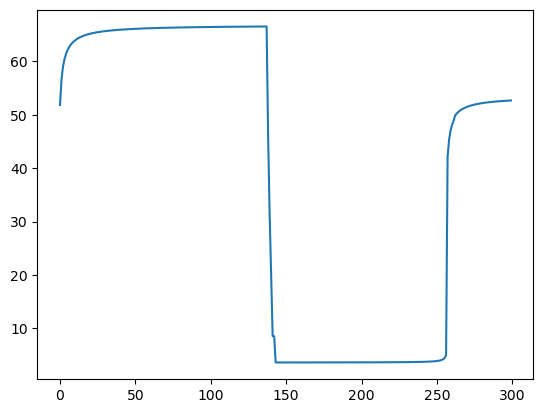
- yhat이랑 모양자체가 너무 다름
5. 적합2 -> 제출2
A. 피처엔지니어링
- 이미 시계열로 적합할 의지가 없으므로 datetime열은 삭제하는게 좋겠음. (인덱스의 역할만 하는 쓸모없는 변수)
df_train_featured = df_train.copy()
df_test_featured = df_test.copy()
#----#
df_train_featured = df_train_featured.drop(['casual','registered'],axis=1)
#--#
df_train_featured = df_train_featured.drop(['datetime'],axis=1)
df_test_featured = df_test_featured.drop(['datetime'],axis=1)B. 적합
- 조용히 적합 (verbosity=False)
# step1 -- pass
# step2
predictr = TabularPredictor(label='count',verbosity=False)
# step3
predictr.fit(df_train_featured)
# step4
yhat = predictr.predict(df_train_featured)
yyhat = predictr.predict(df_test_featured)- 적합결과 시각화
plt.plot(df_train['count'][:300],'--',label='y')
plt.plot(yhat[:300],alpha=0.5,lw=4,label='yhat')
plt.legend()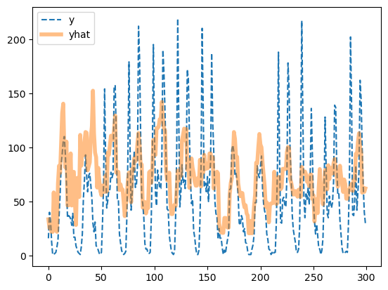
- 오히려 좋아
plt.plot(yyhat[:300],alpha=0.5,lw=4,color='C1')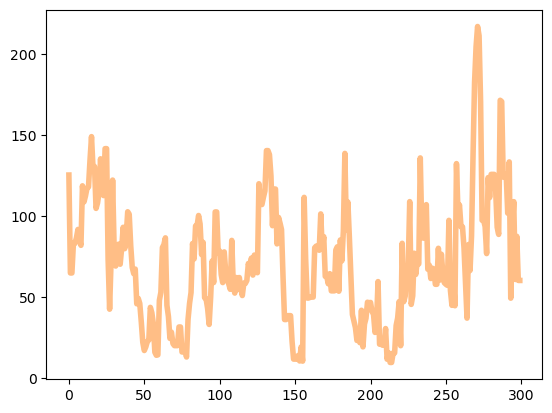
- 더 예쁜 시각화
Warning
강의영상에서 concat이후에 reset_index를 하지 않아 test의 값이 실제관측된것처럼 시각화되는 강의중에 있었습니다. 제가 촬영할 당시에는 전주시기온자료처럼 test가 있는줄알고 설명했었는데, 생각해보니까 없더라고요. 강의노트는 수정되었습니다. 오류발견에 도움을 준 강신성 학생 감사합니다.
_df = pd.concat([
df_train.assign(count_hat = yhat, dataset_type = 'train'),
df_test.assign(count_hat = yyhat, dataset_type = 'test')
]).reset_index(drop=True)
# 강의영상에서는 reset_index(drop=True)를 빼먹었는데요, 이걸 추가해야합니당
_df['datetime'] = pd.to_datetime(_df['datetime'])
sns.lineplot(
_df.sort_values('datetime')[:(24*28)],
x='datetime',y='count',
hue='dataset_type',
linestyle='--',
lw=0.8
)
sns.lineplot(
_df.sort_values('datetime')[:(24*28)],
x='datetime',y='count_hat',
hue='dataset_type',
alpha=0.5,
lw=3
)
fig = plt.gcf()
fig.set_size_inches(8,2)
plt.xticks(rotation=15);
시각화코드를 함수로 구현
def plot(yhat,yyhat):
df = pd.concat([
df_train.assign(count_hat = yhat, dataset_type = 'train'),
df_test.assign(count_hat = yyhat, dataset_type = 'test')
]).reset_index(drop=True)
df['datetime'] = pd.to_datetime(df['datetime'])
sns.lineplot(
df.sort_values('datetime')[:(24*28)],
x='datetime',y='count',
hue='dataset_type',
linestyle='--',
lw=0.8
)
sns.lineplot(
df.sort_values('datetime')[:(24*28)],
x='datetime',y='count_hat',
hue='dataset_type',
alpha=0.5,
lw=3
)
fig = plt.gcf()
fig.set_size_inches(8,2)
plt.xticks(rotation=15);
fig.show()plot(yhat,yyhat)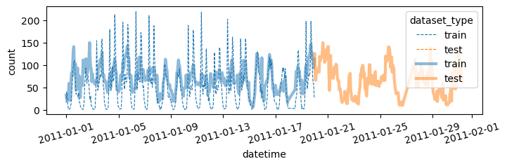
C. 제출
- 제출
sampleSubmission['count'] = yyhat
sampleSubmission.to_csv("submission.csv",index=False)
!kaggle competitions submit -c bike-sharing-demand -f submission.csv -m "Message"
!rm submission.csv100%|████████████████████████████████████████| 188k/188k [00:02<00:00, 87.1kB/s]
Successfully submitted to Bike Sharing Demand- 순위확인
2951/3242 # 냈다면0.9102405922270204D. Pipeline Automation – 싹다 함수로 구현
def fit_predict(df_train_featured, df_test_featured):
# step1 -- pass
# step2
predictr = TabularPredictor(label='count',verbosity=False)
# step3
predictr.fit(df_train_featured)
# step4
yhat = predictr.predict(df_train_featured)
yyhat = predictr.predict(df_test_featured)
# display
display(predictr.leaderboard())
return yhat, yyhat def submit(yyhat):
sampleSubmission['count'] = yyhat
sampleSubmission['count'] = sampleSubmission['count'].apply(lambda x: x if x>0 else 0)
sampleSubmission.to_csv("submission.csv",index=False)
!kaggle competitions submit -c bike-sharing-demand -f submission.csv -m "Message"
!rm submission.csvdef auto(df_train_featured, df_test_featured):
yhat,yyhat = fit_predict(df_train_featured, df_test_featured)
plot(yhat,yyhat)
submit(yyhat)auto(df_train_featured,df_test_featured)| model | score_val | eval_metric | pred_time_val | fit_time | pred_time_val_marginal | fit_time_marginal | stack_level | can_infer | fit_order | |
|---|---|---|---|---|---|---|---|---|---|---|
| 0 | WeightedEnsemble_L2 | -147.075418 | root_mean_squared_error | 0.056906 | 16.592322 | 0.000264 | 0.194645 | 2 | True | 12 |
| 1 | CatBoost | -148.454154 | root_mean_squared_error | 0.001128 | 0.862568 | 0.001128 | 0.862568 | 1 | True | 6 |
| 2 | NeuralNetFastAI | -149.104599 | root_mean_squared_error | 0.008417 | 4.403754 | 0.008417 | 4.403754 | 1 | True | 8 |
| 3 | LightGBMLarge | -149.213280 | root_mean_squared_error | 0.002036 | 0.629842 | 0.002036 | 0.629842 | 1 | True | 11 |
| 4 | LightGBMXT | -149.261116 | root_mean_squared_error | 0.006500 | 0.758697 | 0.006500 | 0.758697 | 1 | True | 3 |
| 5 | XGBoost | -149.642096 | root_mean_squared_error | 0.002317 | 0.223730 | 0.002317 | 0.223730 | 1 | True | 9 |
| 6 | LightGBM | -149.739171 | root_mean_squared_error | 0.001414 | 0.398966 | 0.001414 | 0.398966 | 1 | True | 4 |
| 7 | NeuralNetTorch | -151.984518 | root_mean_squared_error | 0.004586 | 9.352595 | 0.004586 | 9.352595 | 1 | True | 10 |
| 8 | ExtraTreesMSE | -156.627917 | root_mean_squared_error | 0.033974 | 0.390221 | 0.033974 | 0.390221 | 1 | True | 7 |
| 9 | RandomForestMSE | -157.475877 | root_mean_squared_error | 0.034614 | 0.717616 | 0.034614 | 0.717616 | 1 | True | 5 |
| 10 | KNeighborsUnif | -165.533975 | root_mean_squared_error | 0.013925 | 0.013785 | 0.013925 | 0.013785 | 1 | True | 1 |
| 11 | KNeighborsDist | -176.146340 | root_mean_squared_error | 0.013884 | 0.010348 | 0.013884 | 0.010348 | 1 | True | 2 |
100%|████████████████████████████████████████| 243k/243k [00:02<00:00, 98.2kB/s]
Successfully submitted to Bike Sharing Demand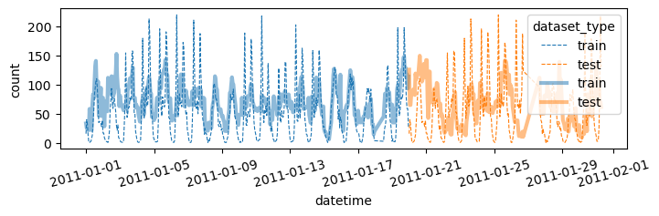
6. 적합3 -> 제출3
A. 시간정보 피처엔지니어링
df_train_featured = df_train.copy()
df_test_featured = df_test.copy()
#----#
df_train_featured = df_train_featured.drop(['casual','registered'],axis=1)
#--#
df_train_featured['hour'] = df_train_featured['datetime'].apply(pd.to_datetime).dt.hour
df_test_featured['hour'] = df_test_featured['datetime'].apply(pd.to_datetime).dt.hour
df_train_featured['weekday'] = df_train_featured['datetime'].apply(pd.to_datetime).dt.weekday
df_test_featured['weekday'] = df_test_featured['datetime'].apply(pd.to_datetime).dt.weekday
#--#
df_train_featured = df_train_featured.drop(['datetime'],axis=1)
df_test_featured = df_test_featured.drop(['datetime'],axis=1)B. 적합 -> 시각화 -> 제출
auto(df_train_featured,df_test_featured)| model | score_val | eval_metric | pred_time_val | fit_time | pred_time_val_marginal | fit_time_marginal | stack_level | can_infer | fit_order | |
|---|---|---|---|---|---|---|---|---|---|---|
| 0 | WeightedEnsemble_L2 | -59.183584 | root_mean_squared_error | 0.069514 | 60.298910 | 0.000204 | 0.210457 | 2 | True | 12 |
| 1 | LightGBMLarge | -60.899261 | root_mean_squared_error | 0.005270 | 1.005032 | 0.005270 | 1.005032 | 1 | True | 11 |
| 2 | CatBoost | -61.268467 | root_mean_squared_error | 0.002820 | 28.899369 | 0.002820 | 28.899369 | 1 | True | 6 |
| 3 | LightGBM | -61.447456 | root_mean_squared_error | 0.012522 | 1.399759 | 0.012522 | 1.399759 | 1 | True | 4 |
| 4 | XGBoost | -61.749260 | root_mean_squared_error | 0.006003 | 0.495828 | 0.006003 | 0.495828 | 1 | True | 9 |
| 5 | LightGBMXT | -62.400538 | root_mean_squared_error | 0.037379 | 3.200461 | 0.037379 | 3.200461 | 1 | True | 3 |
| 6 | RandomForestMSE | -67.993149 | root_mean_squared_error | 0.043988 | 0.890798 | 0.043988 | 0.890798 | 1 | True | 5 |
| 7 | NeuralNetTorch | -68.015000 | root_mean_squared_error | 0.005316 | 25.088004 | 0.005316 | 25.088004 | 1 | True | 10 |
| 8 | ExtraTreesMSE | -68.246627 | root_mean_squared_error | 0.045202 | 0.454563 | 0.045202 | 0.454563 | 1 | True | 7 |
| 9 | NeuralNetFastAI | -71.788466 | root_mean_squared_error | 0.008725 | 4.561440 | 0.008725 | 4.561440 | 1 | True | 8 |
| 10 | KNeighborsDist | -115.023130 | root_mean_squared_error | 0.014185 | 0.011812 | 0.014185 | 0.011812 | 1 | True | 2 |
| 11 | KNeighborsUnif | -117.802477 | root_mean_squared_error | 0.014091 | 0.014837 | 0.014091 | 0.014837 | 1 | True | 1 |
100%|█████████████████████████████████████████| 241k/241k [00:02<00:00, 119kB/s]
Successfully submitted to Bike Sharing Demand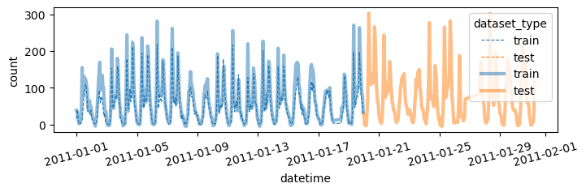
7. 추가적인 피처엔지니어링
A. Step1 – 관련없는 변수 삭제
- 지금까지 수행한 피처엔지니어링
df_train_featured = df_train.copy()
df_test_featured = df_test.copy()
#----#
df_train_featured = df_train_featured.drop(['casual','registered'],axis=1)
#--#
df_train_featured['hour'] = df_train_featured['datetime'].apply(pd.to_datetime).dt.hour
df_test_featured['hour'] = df_test_featured['datetime'].apply(pd.to_datetime).dt.hour
df_train_featured['weekday'] = df_train_featured['datetime'].apply(pd.to_datetime).dt.weekday
df_test_featured['weekday'] = df_test_featured['datetime'].apply(pd.to_datetime).dt.weekday
#--#
df_train_featured = df_train_featured.drop(['datetime'],axis=1)
df_test_featured = df_test_featured.drop(['datetime'],axis=1)sns.heatmap(df_train_featured.set_index('count').reset_index().corr(),vmin=-1,cmap='bwr')
holiday,workingday,weekday는count와 관련이 없어보인다. –> 제외하고 분석
auto(
df_train_featured.drop(['holiday', 'workingday', 'weekday'],axis=1),
df_test_featured.drop(['holiday', 'workingday', 'weekday'],axis=1)
)| model | score_val | eval_metric | pred_time_val | fit_time | pred_time_val_marginal | fit_time_marginal | stack_level | can_infer | fit_order | |
|---|---|---|---|---|---|---|---|---|---|---|
| 0 | WeightedEnsemble_L2 | -100.720195 | root_mean_squared_error | 0.050468 | 37.314308 | 0.000295 | 0.214850 | 2 | True | 12 |
| 1 | CatBoost | -101.264453 | root_mean_squared_error | 0.001266 | 1.337885 | 0.001266 | 1.337885 | 1 | True | 6 |
| 2 | LightGBMXT | -102.499627 | root_mean_squared_error | 0.006051 | 0.726321 | 0.006051 | 0.726321 | 1 | True | 3 |
| 3 | LightGBMLarge | -102.767101 | root_mean_squared_error | 0.002000 | 0.627022 | 0.002000 | 0.627022 | 1 | True | 11 |
| 4 | XGBoost | -103.481823 | root_mean_squared_error | 0.002380 | 0.223965 | 0.002380 | 0.223965 | 1 | True | 9 |
| 5 | LightGBM | -103.565687 | root_mean_squared_error | 0.002466 | 0.456000 | 0.002466 | 0.456000 | 1 | True | 4 |
| 6 | NeuralNetTorch | -105.033591 | root_mean_squared_error | 0.004501 | 29.846097 | 0.004501 | 29.846097 | 1 | True | 10 |
| 7 | RandomForestMSE | -106.378229 | root_mean_squared_error | 0.033754 | 0.784737 | 0.033754 | 0.784737 | 1 | True | 5 |
| 8 | ExtraTreesMSE | -106.730503 | root_mean_squared_error | 0.033365 | 0.383825 | 0.033365 | 0.383825 | 1 | True | 7 |
| 9 | NeuralNetFastAI | -108.017816 | root_mean_squared_error | 0.008652 | 4.503717 | 0.008652 | 4.503717 | 1 | True | 8 |
| 10 | KNeighborsUnif | -128.806002 | root_mean_squared_error | 0.013857 | 0.013749 | 0.013857 | 0.013749 | 1 | True | 1 |
| 11 | KNeighborsDist | -128.946333 | root_mean_squared_error | 0.013680 | 0.011467 | 0.013680 | 0.011467 | 1 | True | 2 |
100%|█████████████████████████████████████████| 242k/242k [00:02<00:00, 105kB/s]
Successfully submitted to Bike Sharing Demand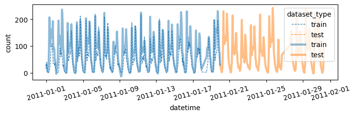
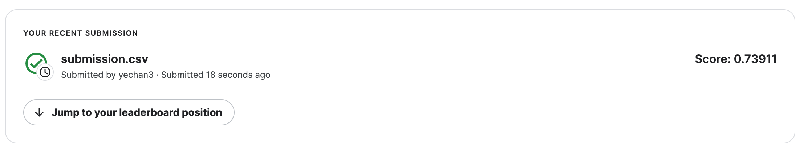
- 안좋아졌음..
- 왜 이런 결과가 나오는가?
sex = np.array([0,0,0,0]*100+[0] + [1]+[1,1,1,1]*100 + [2]*401)
surv = np.array([0,0,0,0]*100+[1] + [0]+[1,1,1,1]*100 + [0]*401)
surv_conti = surv + np.random.randn(len(surv))*0.1
_df = pd.DataFrame({'sex':sex, 'surv':surv, 'surv_conti':surv_conti})
_df.corr()| sex | surv | surv_conti | |
|---|---|---|---|
| sex | 1.00000 | -0.002160 | 0.006710 |
| surv | -0.00216 | 1.000000 | 0.978614 |
| surv_conti | 0.00671 | 0.978614 | 1.000000 |
sns.scatterplot(_df, x='sex',y='surv_conti',alpha=0.5)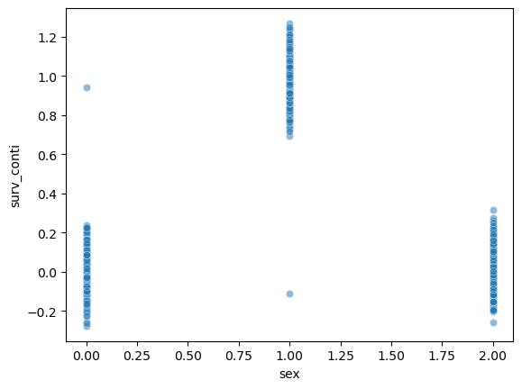
surv_conti.mean()0.33106272309886425sns.heatmap(_df.corr(),cmap='bwr',vmin=-1)
- 우리의 예제
sns.scatterplot(
df_train_featured,
x='holiday',
y='count',
alpha=0.1
)
sns.scatterplot(
df_train_featured,
x='weekday',
y='count',
alpha=0.1
)
sns.scatterplot(
df_train_featured,
x='workingday',
y='count',
alpha=0.1
)
B. Step2 – atemp 혹은 temp 삭제
- 지금까지 한 피처엔지니어링
df_train_featured = df_train.copy()
df_test_featured = df_test.copy()
#----#
df_train_featured = df_train_featured.drop(['casual','registered'],axis=1)
#--#
df_train_featured['hour'] = df_train_featured['datetime'].apply(pd.to_datetime).dt.hour
df_test_featured['hour'] = df_test_featured['datetime'].apply(pd.to_datetime).dt.hour
df_train_featured['weekday'] = df_train_featured['datetime'].apply(pd.to_datetime).dt.weekday
df_test_featured['weekday'] = df_test_featured['datetime'].apply(pd.to_datetime).dt.weekday
#--#
df_train_featured = df_train_featured.drop(['datetime'],axis=1)
df_test_featured = df_test_featured.drop(['datetime'],axis=1)sns.heatmap(df_train_featured.set_index('count').reset_index().corr(),vmin=-1,cmap='bwr')
- temp와 atemp가 동시에 있어서 공선성 문제를 만들 수 있어보임.
- 둘중 하나를 제거하는게 좋을것 같음.
auto(
df_train_featured.drop(['temp'],axis=1),
df_test_featured.drop(['temp'],axis=1)
)| model | score_val | eval_metric | pred_time_val | fit_time | pred_time_val_marginal | fit_time_marginal | stack_level | can_infer | fit_order | |
|---|---|---|---|---|---|---|---|---|---|---|
| 0 | WeightedEnsemble_L2 | -59.661085 | root_mean_squared_error | 0.068235 | 52.671916 | 0.000211 | 0.205234 | 2 | True | 12 |
| 1 | LightGBMLarge | -61.029920 | root_mean_squared_error | 0.007744 | 1.101566 | 0.007744 | 1.101566 | 1 | True | 11 |
| 2 | LightGBM | -61.580307 | root_mean_squared_error | 0.012708 | 1.266454 | 0.012708 | 1.266454 | 1 | True | 4 |
| 3 | CatBoost | -61.849961 | root_mean_squared_error | 0.002540 | 15.688297 | 0.002540 | 15.688297 | 1 | True | 6 |
| 4 | XGBoost | -62.741724 | root_mean_squared_error | 0.006430 | 0.513563 | 0.006430 | 0.513563 | 1 | True | 9 |
| 5 | LightGBMXT | -63.351618 | root_mean_squared_error | 0.033782 | 2.945290 | 0.033782 | 2.945290 | 1 | True | 3 |
| 6 | NeuralNetTorch | -67.160978 | root_mean_squared_error | 0.004820 | 30.951511 | 0.004820 | 30.951511 | 1 | True | 10 |
| 7 | ExtraTreesMSE | -67.852239 | root_mean_squared_error | 0.033828 | 0.421369 | 0.033828 | 0.421369 | 1 | True | 7 |
| 8 | RandomForestMSE | -68.525817 | root_mean_squared_error | 0.034256 | 0.803596 | 0.034256 | 0.803596 | 1 | True | 5 |
| 9 | NeuralNetFastAI | -71.236321 | root_mean_squared_error | 0.008820 | 4.587249 | 0.008820 | 4.587249 | 1 | True | 8 |
| 10 | KNeighborsDist | -114.334789 | root_mean_squared_error | 0.013994 | 0.011189 | 0.013994 | 0.011189 | 1 | True | 2 |
| 11 | KNeighborsUnif | -116.835940 | root_mean_squared_error | 0.013904 | 0.013740 | 0.013904 | 0.013740 | 1 | True | 1 |
100%|█████████████████████████████████████████| 241k/241k [00:02<00:00, 111kB/s]
Successfully submitted to Bike Sharing Demand

auto(
df_train_featured.drop(['atemp'],axis=1),
df_test_featured.drop(['atemp'],axis=1)
)| model | score_val | eval_metric | pred_time_val | fit_time | pred_time_val_marginal | fit_time_marginal | stack_level | can_infer | fit_order | |
|---|---|---|---|---|---|---|---|---|---|---|
| 0 | WeightedEnsemble_L2 | -59.161569 | root_mean_squared_error | 0.058520 | 43.250057 | 0.000205 | 0.210755 | 2 | True | 12 |
| 1 | LightGBMLarge | -60.667457 | root_mean_squared_error | 0.006015 | 1.104513 | 0.006015 | 1.104513 | 1 | True | 11 |
| 2 | CatBoost | -60.919338 | root_mean_squared_error | 0.002347 | 12.434360 | 0.002347 | 12.434360 | 1 | True | 6 |
| 3 | LightGBMXT | -61.740606 | root_mean_squared_error | 0.033585 | 2.036513 | 0.033585 | 2.036513 | 1 | True | 3 |
| 4 | LightGBM | -62.028032 | root_mean_squared_error | 0.011572 | 1.219089 | 0.011572 | 1.219089 | 1 | True | 4 |
| 5 | XGBoost | -62.503591 | root_mean_squared_error | 0.005502 | 0.458084 | 0.005502 | 0.458084 | 1 | True | 9 |
| 6 | NeuralNetTorch | -67.652560 | root_mean_squared_error | 0.004797 | 26.244827 | 0.004797 | 26.244827 | 1 | True | 10 |
| 7 | RandomForestMSE | -67.814371 | root_mean_squared_error | 0.033902 | 0.790725 | 0.033902 | 0.790725 | 1 | True | 5 |
| 8 | ExtraTreesMSE | -67.843089 | root_mean_squared_error | 0.034101 | 0.446014 | 0.034101 | 0.446014 | 1 | True | 7 |
| 9 | NeuralNetFastAI | -71.021153 | root_mean_squared_error | 0.009062 | 4.536268 | 0.009062 | 4.536268 | 1 | True | 8 |
| 10 | KNeighborsDist | -112.678494 | root_mean_squared_error | 0.013878 | 0.011646 | 0.013878 | 0.011646 | 1 | True | 2 |
| 11 | KNeighborsUnif | -115.103505 | root_mean_squared_error | 0.013806 | 0.014137 | 0.013806 | 0.014137 | 1 | True | 1 |
100%|█████████████████████████████████████████| 241k/241k [00:02<00:00, 103kB/s]
Successfully submitted to Bike Sharing Demand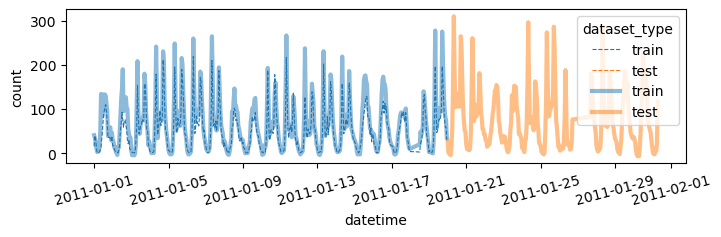
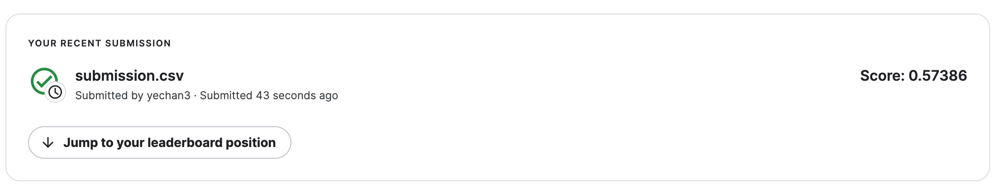
C. Step3 – season을 범주로?
- 지금까지한 피처엔지니어링
df_train_featured = df_train.copy()
df_test_featured = df_test.copy()
#----#
df_train_featured = df_train_featured.drop(['casual','registered'],axis=1)
#--#
df_train_featured['hour'] = df_train_featured['datetime'].apply(pd.to_datetime).dt.hour
df_test_featured['hour'] = df_test_featured['datetime'].apply(pd.to_datetime).dt.hour
df_train_featured['weekday'] = df_train_featured['datetime'].apply(pd.to_datetime).dt.weekday
df_test_featured['weekday'] = df_test_featured['datetime'].apply(pd.to_datetime).dt.weekday
#--#
df_train_featured = df_train_featured.drop(['datetime'],axis=1)
df_test_featured = df_test_featured.drop(['datetime'],axis=1)
#--#
df_train_featured = df_train_featured.drop(['atemp'],axis=1)
df_test_featured = df_test_featured.drop(['atemp'],axis=1)- 사실 season의 의미는 season - 1 = spring, 2 = summer, 3 = fall, 4 = winter 임
- 지금은 season이 1,2,3,4로 코딩되어 있는데, 이것을 문자열로 바꾸면 더 좋지 않을까?
auto(
df_train_featured.assign(season = df_train_featured.season.map({1:'spring',2:'summer',3:'fall',4:'winter'})),
df_test_featured.assign(season = df_train_featured.season.map({1:'spring',2:'summer',3:'fall',4:'winter'}))
)| model | score_val | eval_metric | pred_time_val | fit_time | pred_time_val_marginal | fit_time_marginal | stack_level | can_infer | fit_order | |
|---|---|---|---|---|---|---|---|---|---|---|
| 0 | WeightedEnsemble_L2 | -58.923266 | root_mean_squared_error | 0.103771 | 83.261498 | 0.000212 | 0.204901 | 2 | True | 12 |
| 1 | LightGBMXT | -61.072683 | root_mean_squared_error | 0.071960 | 4.116169 | 0.071960 | 4.116169 | 1 | True | 3 |
| 2 | LightGBMLarge | -61.188052 | root_mean_squared_error | 0.010475 | 1.417209 | 0.010475 | 1.417209 | 1 | True | 11 |
| 3 | CatBoost | -62.040378 | root_mean_squared_error | 0.005282 | 45.725700 | 0.005282 | 45.725700 | 1 | True | 6 |
| 4 | LightGBM | -62.161719 | root_mean_squared_error | 0.013529 | 1.151105 | 0.013529 | 1.151105 | 1 | True | 4 |
| 5 | XGBoost | -62.183089 | root_mean_squared_error | 0.010121 | 0.584406 | 0.010121 | 0.584406 | 1 | True | 9 |
| 6 | NeuralNetTorch | -67.027221 | root_mean_squared_error | 0.005721 | 31.213113 | 0.005721 | 31.213113 | 1 | True | 10 |
| 7 | RandomForestMSE | -68.346914 | root_mean_squared_error | 0.045137 | 0.792526 | 0.045137 | 0.792526 | 1 | True | 5 |
| 8 | ExtraTreesMSE | -68.569688 | root_mean_squared_error | 0.034451 | 0.439754 | 0.034451 | 0.439754 | 1 | True | 7 |
| 9 | NeuralNetFastAI | -72.272942 | root_mean_squared_error | 0.010581 | 4.941111 | 0.010581 | 4.941111 | 1 | True | 8 |
| 10 | KNeighborsDist | -113.647125 | root_mean_squared_error | 0.013876 | 0.011077 | 0.013876 | 0.011077 | 1 | True | 2 |
| 11 | KNeighborsUnif | -116.110797 | root_mean_squared_error | 0.014100 | 0.012653 | 0.014100 | 0.012653 | 1 | True | 1 |
100%|█████████████████████████████████████████| 240k/240k [00:01<00:00, 135kB/s]
Successfully submitted to Bike Sharing Demand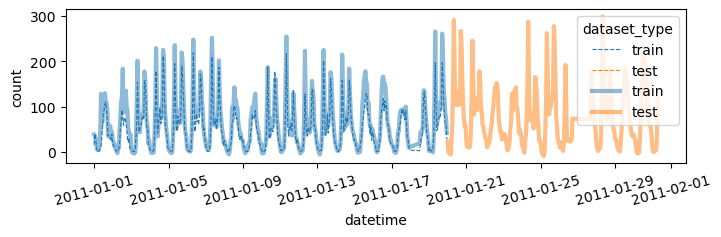
- 이건 적용하지 말자.
- 어차피 트리계열은 명목형변수를 순서형변수로 잘못 적용해도 크게 상관없음.
D. Step4 – \(y\)의 분포
- 지금까지한 피처엔지니어링
df_train_featured = df_train.copy()
df_test_featured = df_test.copy()
#----#
df_train_featured = df_train_featured.drop(['casual','registered'],axis=1)
#--#
df_train_featured['hour'] = df_train_featured['datetime'].apply(pd.to_datetime).dt.hour
df_test_featured['hour'] = df_test_featured['datetime'].apply(pd.to_datetime).dt.hour
df_train_featured['weekday'] = df_train_featured['datetime'].apply(pd.to_datetime).dt.weekday
df_test_featured['weekday'] = df_test_featured['datetime'].apply(pd.to_datetime).dt.weekday
#--#
df_train_featured = df_train_featured.drop(['datetime'],axis=1)
df_test_featured = df_test_featured.drop(['datetime'],axis=1)
#--#
df_train_featured = df_train_featured.drop(['atemp'],axis=1)
df_test_featured = df_test_featured.drop(['atemp'],axis=1)df_train_featured['count'].hist() # 정규분포가 아니네
transfomr = sklearn.preprocessing.PowerTransformer(method='box-cox')count2 = transfomr.fit_transform(df_train_featured[['count']]).reshape(-1)
plt.hist(count2);
df_train_featured.assign(count = count2)| season | holiday | workingday | weather | temp | humidity | windspeed | count | hour | weekday | |
|---|---|---|---|---|---|---|---|---|---|---|
| 0 | 1 | 0 | 0 | 1 | 9.84 | 81 | 0.0000 | -1.255010 | 0 | 5 |
| 1 | 1 | 0 | 0 | 1 | 9.02 | 80 | 0.0000 | -0.801417 | 1 | 5 |
| 2 | 1 | 0 | 0 | 1 | 9.02 | 80 | 0.0000 | -0.924248 | 2 | 5 |
| 3 | 1 | 0 | 0 | 1 | 9.84 | 75 | 0.0000 | -1.340805 | 3 | 5 |
| 4 | 1 | 0 | 0 | 1 | 9.84 | 75 | 0.0000 | -2.043720 | 4 | 5 |
| ... | ... | ... | ... | ... | ... | ... | ... | ... | ... | ... |
| 10881 | 4 | 0 | 1 | 1 | 15.58 | 50 | 26.0027 | 0.928271 | 19 | 2 |
| 10882 | 4 | 0 | 1 | 1 | 14.76 | 57 | 15.0013 | 0.576172 | 20 | 2 |
| 10883 | 4 | 0 | 1 | 1 | 13.94 | 61 | 15.0013 | 0.233448 | 21 | 2 |
| 10884 | 4 | 0 | 1 | 1 | 13.94 | 61 | 6.0032 | 0.006178 | 22 | 2 |
| 10885 | 4 | 0 | 1 | 1 | 13.12 | 66 | 8.9981 | -0.291061 | 23 | 2 |
10886 rows × 10 columns
- 적합
# step1 -- pass
# step2
predictr = TabularPredictor(label='count',verbosity=False)
# step3
predictr.fit(df_train_featured.assign(count = count2))
# step4
yhat = predictr.predict(df_train_featured)
yyhat = predictr.predict(df_test_featured)yhat = transfomr.inverse_transform(yhat.to_frame()).reshape(-1)
yyhat = transfomr.inverse_transform(yyhat.to_frame()).reshape(-1)plot(yhat,yyhat)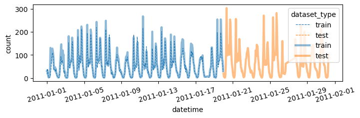
submit(yyhat)100%|█████████████████████████████████████████| 243k/243k [00:02<00:00, 111kB/s]
Successfully submitted to Bike Sharing Demand
8. HW
box-cox transform이 아닌 log1p변환을 취해서 결과를 구해볼 것
np.log1p(0.1234), np.log(0.1234+1)(0.11635980111619529, 0.11635980111619525)np.expm1(0.11635980111619529)0.1234결과는 아래와 같음